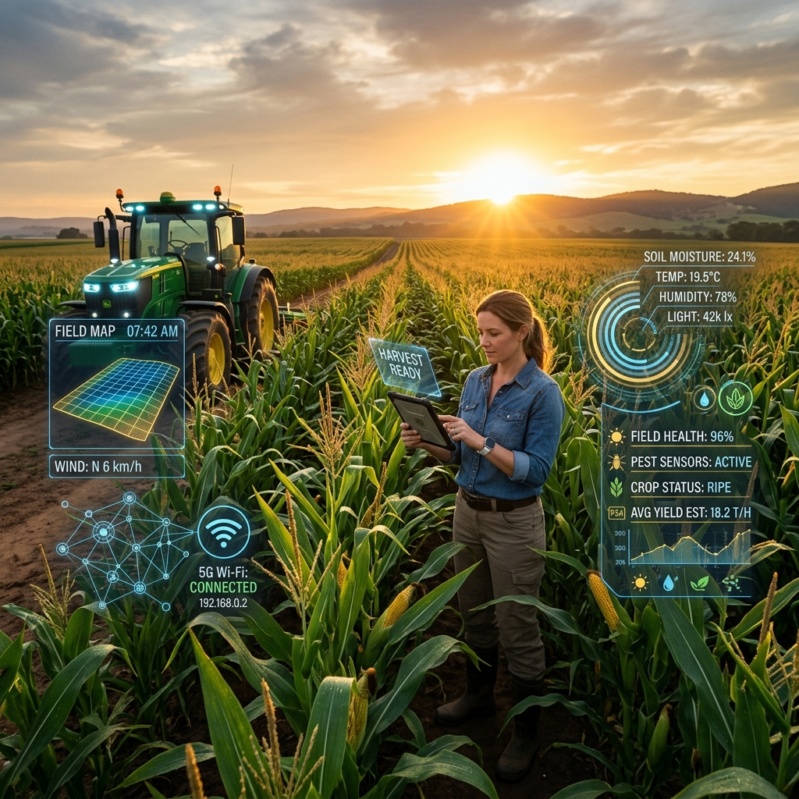

Smart Farming Solution
When technology meets farming, every field becomes smarter and every harvest becomes better.
Real-time soil health monitoring and tailored fertilizer advice for our unique soils. Boost your yield and sustain the land effortlessly.
